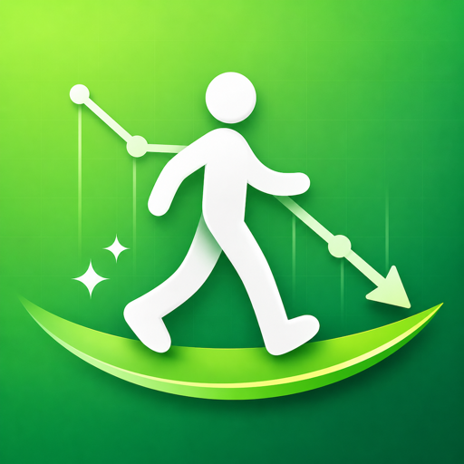

WalkLean
歩いて、痩せる。ムリなく、続く。
iPhone 無料（アプリ内課金あり）
「歩数 × 体重」だけに絞った、シンプルなダイエットアプリです。歩数は iPhone が自動で記録するので、あとは体重を入れるだけ。目標を達成できない日があっても責めない、続けやすい設計です。
できること
- 歩数を自動で記録：今日の歩数と、消費カロリー・距離・歩行時間がひと目で分かります
- 2つの歩数目標：「目標歩数」と、これだけは歩きたい「最小目標歩数」を決められるので、少ししか歩けない日も達成感があります
- 体重の記録とグラフ：1週間〜1年の変化を、目標体重のラインと一緒にグラフで確認できます
- カレンダー：毎日の歩数の達成度と体重の変化を、月ごとに振り返れます
- 週間レポート：1週間の合計歩数や、目標を達成した日数が分かります
- ウィジェット：ホーム画面やロック画面に今日の歩数を表示できます
記録は端末の中だけに
歩数や体重の記録はお使いの iPhone の中にだけ保存され、外部には送信されません。